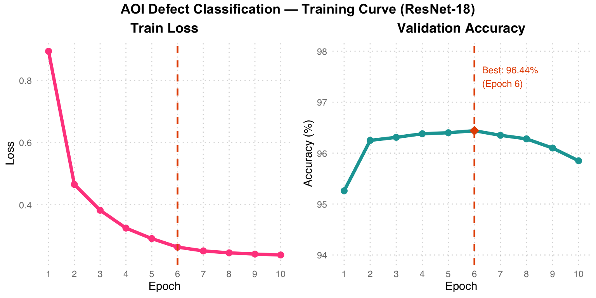
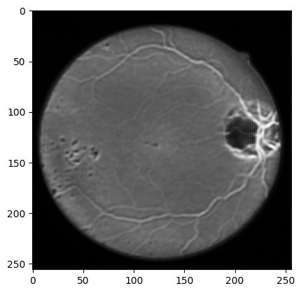
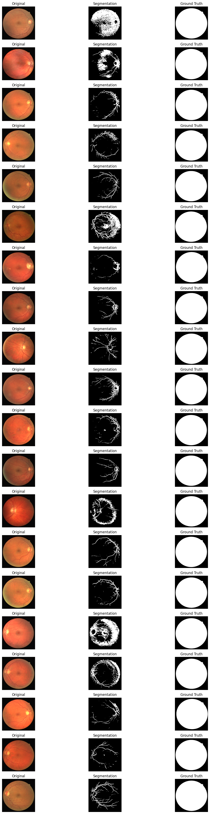
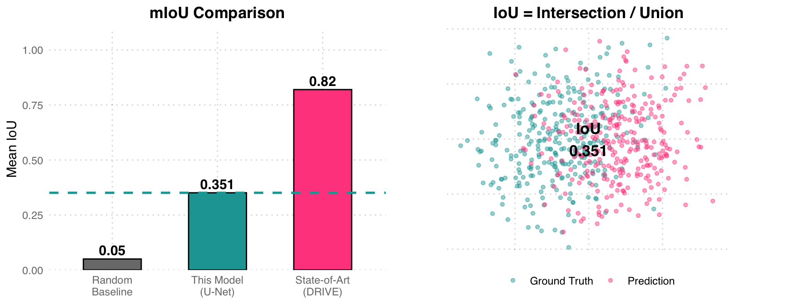
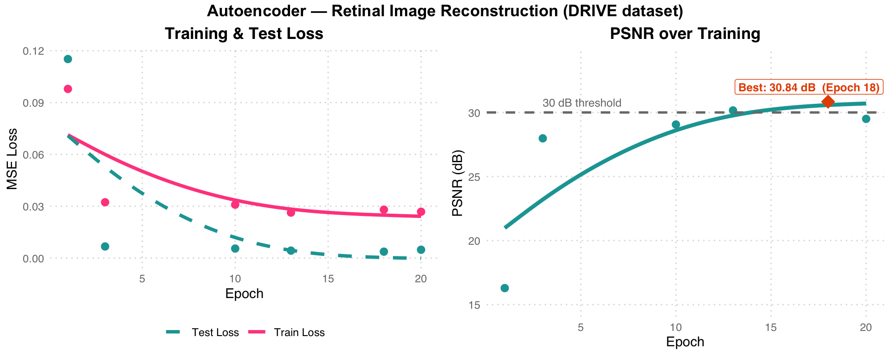
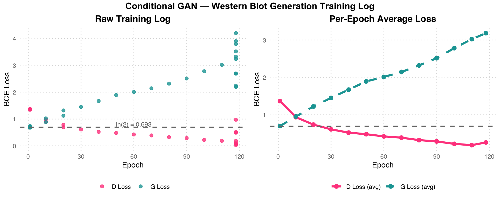

%%{init: {"theme": "base", "themeVariables": {"fontSize": "18px"}, "flowchart": {"padding": 35}}}%%
flowchart LR
A["Pretrained ResNet-18 "] --> B["Freeze Backbone "] --> C["Replace fc → 6 cls "] --> D["Train Classifier "] --> E["Defect Prediction "]
style A fill:#E3F2FD,color:#1565C0,stroke:#90CAF9,stroke-width:2px
style B fill:#F5F5F5,color:#424242,stroke:#BDBDBD,stroke-width:2px
style C fill:#FFF3E0,color:#E65100,stroke:#FFCC80,stroke-width:2px
style D fill:#E8F5E9,color:#2E7D32,stroke:#A5D6A7,stroke-width:2px
style E fill:#E8F5E9,color:#2E7D32,stroke:#A5D6A7,stroke-width:2px
Deep Learning
Assignments
Assignment 1 — AOI Defect Classification
Task: Classify industrial component images into 6 defect categories using a fine-tuned ResNet-18, trained on the AOI (Automated Optical Inspection) dataset.
Dataset: AOI Dataset — 2,530 training images, 10,144 test images, 6 classes (normal, void, horizontal defect, vertical defect, edge defect, particle)
Method: ResNet-18 (ImageNet pretrained) — frozen backbone, fine-tuned classifier head
Transfer Learning Strategy
Transfer Learning Strategy: Freeze all pretrained parameters of ResNet-18, replace only the final fc layer with a 6-class output, and train the classifier head using Adam optimizer (lr=0.001). Data preprocessing: 224x224 RGB, normalized with ImageNet mean/std.
Model Setup
model = models.resnet18(pretrained=True)
# Freeze all parameters
for param in model.parameters():
param.requires_grad = False
# Replace final layer for 6-class output
num_ftrs = model.fc.in_features
model.fc = nn.Linear(num_ftrs, 6)
device = torch.device('cuda' if torch.cuda.is_available() else 'cpu')
model = model.to(device)Training Setup
criterion = nn.CrossEntropyLoss()
optimizer = optim.Adam(model.fc.parameters(), lr=0.001)
num_epochs = 10
batch_size = 32
# Input: 224x224 RGB, normalized to ImageNet mean/stdResults
| Epoch | Train Loss | Val Accuracy |
|---|---|---|
| 1 | 0.8943 | 95.26% |
| 2 | 0.4654 | 96.25% |
| 6 | 0.2635 | 96.44% |
| 10 | 0.2381 | 95.85% |
Best Validation Accuracy: 96.44%

Training Curve Analysis: Pink Train Loss drops sharply in the first 3 epochs and then plateaus. Teal Val Accuracy reaches its peak of 96.44% at Epoch 6 (orange diamond), after which slight overfitting occurs (accuracy decreases marginally). The orange dashed line marks the best epoch.
Assignment 2 — Retinal Vessel Segmentation
Task: Perform binary semantic segmentation of blood vessels in retinal fundus images using a custom U-Net architecture trained on the DRIVE dataset.
Dataset: DRIVE (Digital Retinal Images for Vessel Extraction) — 22 training, 20 test images, 512x512
Method: U-Net (5-level encoder-decoder with skip connections) + Focal Tversky Loss
Sample Retinal Images from Dataset



U-Net Architecture
%%{init: {"theme": "base", "themeVariables": {"fontSize": "18px"}, "flowchart": {"padding": 35}}}%%
flowchart TD
IN["Input 1ch 512x512 "] --> E1["Conv1: 1→64 "]
E1 -->|Pool 2x| E2["Conv2: 64→128 "]
E2 -->|Pool 2x| E3["Conv3: 128→256 "]
E3 -->|Pool 2x| E4["Conv4: 256→512 "]
E4 -->|Pool 2x| BN["Bottleneck: 512→1024 "]
BN --> U1["Up: 1024→512 "]
U1 -->|+skip E4| U2["Up: 512→256 "]
U2 -->|+skip E3| U3["Up: 256→128 "]
U3 -->|+skip E2| U4["Up: 128→64 "]
U4 -->|+skip E1| OUT["Mask Output "]
E4 -.->|"skip"| U1
E3 -.->|"skip"| U2
E2 -.->|"skip"| U3
E1 -.->|"skip"| U4
style IN fill:#E3F2FD,color:#1565C0,stroke:#90CAF9,stroke-width:2px
style E1 fill:#E3F2FD,color:#1565C0,stroke:#90CAF9,stroke-width:2px
style E2 fill:#E3F2FD,color:#1565C0,stroke:#90CAF9,stroke-width:2px
style E3 fill:#E3F2FD,color:#1565C0,stroke:#90CAF9,stroke-width:2px
style E4 fill:#E3F2FD,color:#1565C0,stroke:#90CAF9,stroke-width:2px
style BN fill:#FFF3E0,color:#E65100,stroke:#FFCC80,stroke-width:2px
style U1 fill:#E8F5E9,color:#2E7D32,stroke:#A5D6A7,stroke-width:2px
style U2 fill:#E8F5E9,color:#2E7D32,stroke:#A5D6A7,stroke-width:2px
style U3 fill:#E8F5E9,color:#2E7D32,stroke:#A5D6A7,stroke-width:2px
style U4 fill:#E8F5E9,color:#2E7D32,stroke:#A5D6A7,stroke-width:2px
style OUT fill:#E8F5E9,color:#2E7D32,stroke:#A5D6A7,stroke-width:2px
U-Net Architecture Color Code: Light blue = Encoder (contracting path), Light gray = MaxPool downsampling, Light orange = Bottleneck (deepest level, 512->1024), Light green = Decoder (expanding path) + skip connections. Each skip connection passes spatial details from the encoder to the decoder, preserving high-resolution vessel edge information.
class UNet(torch.nn.Module):
def __init__(self, inchannel, outchannel):
super(UNet, self).__init__()
# Encoder
self.conv1 = Conv(inchannel, 64)
self.conv2 = Conv(64, 128)
self.conv3 = Conv(128, 256)
self.conv4 = Conv(256, 512)
self.conv5 = Conv(512, 1024)
self.pool = torch.nn.MaxPool2d(2)
# Decoder
self.up1 = torch.nn.ConvTranspose2d(1024, 512, 2, 2)
self.conv6 = Conv(1024, 512)
self.up2 = torch.nn.ConvTranspose2d(512, 256, 2, 2)
self.conv7 = Conv(512, 256)
self.up3 = torch.nn.ConvTranspose2d(256, 128, 2, 2)
self.conv8 = Conv(256, 128)
self.up4 = torch.nn.ConvTranspose2d(128, 64, 2, 2)
self.conv9 = Conv(128, 64)
self.conv10 = torch.nn.Conv2d(64, outchannel, 3, 1, 1)Training Setup
# Focal Tversky Loss — handles class imbalance in vessel vs background
criterion = lambda y_pred, y_true: focal_tversky_loss(
y_pred, y_true, alpha=0.5, beta=0.5, gamma=0.75
)
optimizer = torch.optim.Adam(model.parameters(), lr=0.001)
scheduler = torch.optim.lr_scheduler.ReduceLROnPlateau(
optimizer, mode='min', factor=0.5, patience=5
)
device = torch.device("mps") # Apple Silicon
num_epochs = 100Segmentation Results
Each row shows: Original fundus image -> Predicted segmentation mask -> Ground truth mask

Segmentation Results Observation: The model successfully identifies major vessel trajectories and distributions, but there is still room for improvement in detecting fine capillaries. The ground truth shows many extremely thin capillaries, and the model tends to predict only the thicker vessel structures.
Quantitative Results
| Metric | Value |
|---|---|
| Mean IoU (mIoU) | 0.3510 |
| Training epochs | 100 |
| Input resolution | 512 x 512 |

mIoU Analysis: The left chart compares three benchmarks: random baseline (0.05), this U-Net model (0.351), and DRIVE dataset SOTA (~0.82). The right chart uses a Venn-style scatter plot to illustrate the IoU concept – teal represents Ground Truth, pink represents Prediction, and the overlapping region is the Intersection. An mIoU of 0.351 means the overlap between predictions and labels is about 35%, with room for improvement (possible approaches: deeper network, more data augmentation, class-weighted loss).
Assignment 3 — Retinal Image Reconstruction
Task: Train a convolutional autoencoder to reconstruct retinal fundus images in an unsupervised manner, evaluated by Peak Signal-to-Noise Ratio (PSNR).
Dataset: DRIVE — 21 training, 20 test images, 512x512 RGB
Method: Convolutional Autoencoder (Encoder-Decoder with skip connections) + MSE Loss
AutoEncoder Architecture
%%{init: {"theme": "base", "themeVariables": {"fontSize": "18px"}, "flowchart": {"padding": 35}}}%%
flowchart TD
IN["Input 3ch 512x512 "] --> C1["Conv1: 3→64 "]
C1 -->|Pool 2x| C2["Conv2: 64→128 "]
C2 -->|Pool 2x| C3["Conv3: 128→256 "]
C3 -->|Pool 2x| C4["Bottleneck: 256→512 "]
C4 --> U1["Up: 512→256 "]
U1 -->|+skip C3| U2["Up: 256→128 "]
U2 -->|+skip C2| U3["Up: 128→64 "]
U3 -->|+skip C1| OUT["Output: 64→3ch "]
C3 -.->|"skip"| U1
C2 -.->|"skip"| U2
C1 -.->|"skip"| U3
style IN fill:#E3F2FD,color:#1565C0,stroke:#90CAF9,stroke-width:2px
style C1 fill:#E3F2FD,color:#1565C0,stroke:#90CAF9,stroke-width:2px
style C2 fill:#E3F2FD,color:#1565C0,stroke:#90CAF9,stroke-width:2px
style C3 fill:#E3F2FD,color:#1565C0,stroke:#90CAF9,stroke-width:2px
style C4 fill:#FFF3E0,color:#E65100,stroke:#FFCC80,stroke-width:2px
style U1 fill:#E8F5E9,color:#2E7D32,stroke:#A5D6A7,stroke-width:2px
style U2 fill:#E8F5E9,color:#2E7D32,stroke:#A5D6A7,stroke-width:2px
style U3 fill:#E8F5E9,color:#2E7D32,stroke:#A5D6A7,stroke-width:2px
style OUT fill:#E8F5E9,color:#2E7D32,stroke:#A5D6A7,stroke-width:2px
Autoencoder Architecture Color Code: Light blue = Encoder, Light orange = Bottleneck (256->512 compressed representation), Light green = Decoder + skip connections. This shares the same encoder-decoder structure as U-Net, but the objective is to reconstruct the input image (self-supervised learning) rather than segmentation.
class AutoEncoder(nn.Module):
def __init__(self, inchannel=3, outchannel=3):
super(AutoEncoder, self).__init__()
# Encoder
self.conv1 = Conv(inchannel, 64)
self.conv2 = Conv(64, 128)
self.conv3 = Conv(128, 256)
self.conv4 = Conv(256, 512)
self.pool = nn.MaxPool2d(2)
# Decoder (with skip connections)
self.up1 = nn.ConvTranspose2d(512, 256, 2, 2)
self.conv5 = Conv(512, 256)
self.up2 = nn.ConvTranspose2d(256, 128, 2, 2)
self.conv6 = Conv(256, 128)
self.up3 = nn.ConvTranspose2d(128, 64, 2, 2)
self.conv7 = Conv(128, 64)
self.conv8 = nn.Conv2d(64, outchannel, 3, 1, 1)Training Setup
criterion = nn.MSELoss()
optimizer = torch.optim.Adam(model.parameters(), lr=0.001)
num_epochs = 20
batch_size = 1
# Normalization: mean=0.5, std=0.5
device = torch.device("cuda" if torch.cuda.is_available() else "mps")Results
| Epoch | Train Loss | Test Loss | PSNR (dB) |
|---|---|---|---|
| 1 | 0.0979 | 0.1152 | 16.29 |
| 3 | 0.0323 | 0.0067 | 27.98 |
| 10 | 0.0309 | 0.0055 | 29.06 |
| 13 | 0.0263 | 0.0043 | 30.16 |
| 18 | 0.0280 | 0.0037 | 30.84 |
| 20 | 0.0268 | 0.0048 | 29.50 |
Best PSNR: 30.84 dB at Epoch 18
Warning in annotate("label", x = best_ep - 1, y = 32, label = paste0("Best: ",
: Ignoring unknown parameters: `label.size`
Training Curve Analysis: Left chart – Pink Train Loss and teal dashed Test Loss both drop rapidly in the first 3 epochs and then plateau. Right chart – PSNR peaks at 30.84 dB at Epoch 18 (exceeding the 30 dB threshold, gray dashed line), then slightly decreases (29.50 dB at Epoch 20), indicating Epoch 18 is the optimal stopping point.
Assignment 4 — Western Blot Image Generation
Task: Train a conditional GAN to generate Western blot images from two template images, learning the mapping from template patterns to realistic blot patterns.
Dataset: Western Blot Dataset — 402 template pairs + 402 target images, 64x64 grayscale
Method: Conditional GAN — Encoder-Decoder Generator + PatchGAN-style Discriminator
Conditional GAN Training Flow
%%{init: {"theme": "base", "themeVariables": {"fontSize": "18px"}, "flowchart": {"padding": 35}}}%%
flowchart TD
T1["Template 1: 64x64 "] --> CAT["Concat 2ch "]
T2["Template 2: 64x64 "] --> CAT
CAT --> G["Generator "]
G --> FAKE["Generated Image "]
REAL["Real Image "] --> D["Discriminator "]
FAKE --> D
D -->|G loss| UG["Update G "]
D -->|D loss| UD["Update D "]
style T1 fill:#E3F2FD,color:#1565C0,stroke:#90CAF9,stroke-width:2px
style T2 fill:#E3F2FD,color:#1565C0,stroke:#90CAF9,stroke-width:2px
style CAT fill:#F5F5F5,color:#424242,stroke:#BDBDBD,stroke-width:2px
style G fill:#E3F2FD,color:#1565C0,stroke:#90CAF9,stroke-width:2px
style FAKE fill:#FFF3E0,color:#E65100,stroke:#FFCC80,stroke-width:2px
style REAL fill:#E8F5E9,color:#2E7D32,stroke:#A5D6A7,stroke-width:2px
style D fill:#FCE4EC,color:#C62828,stroke:#F48FB1,stroke-width:2px
style UG fill:#E3F2FD,color:#1565C0,stroke:#90CAF9,stroke-width:2px
style UD fill:#FCE4EC,color:#C62828,stroke:#F48FB1,stroke-width:2px
GAN Training Flow: Two template images are concatenated into a 2-channel input, passed through the blue Generator to produce a fake blot image (orange). The pink Discriminator determines whether the input is real (green) or fake (orange), and returns G loss / D loss to update their respective parameters.
Generator Architecture
class TemplateToImageGenerator(nn.Module):
def __init__(self):
super(TemplateToImageGenerator, self).__init__()
self.encoder = nn.Sequential(
nn.Conv2d(1, 64, kernel_size=4, stride=2, padding=1),
nn.BatchNorm2d(64), nn.ReLU(),
nn.Conv2d(64, 128, kernel_size=4, stride=2, padding=1),
nn.BatchNorm2d(128), nn.ReLU(),
nn.Conv2d(128, 256, kernel_size=4, stride=2, padding=1),
nn.BatchNorm2d(256), nn.ReLU(),
)
self.decoder = nn.Sequential(
nn.ConvTranspose2d(256, 128, kernel_size=4, stride=2, padding=1),
nn.BatchNorm2d(128), nn.ReLU(),
nn.ConvTranspose2d(128, 64, kernel_size=4, stride=2, padding=1),
nn.BatchNorm2d(64), nn.ReLU(),
nn.ConvTranspose2d(64, 1, kernel_size=4, stride=2, padding=1),
nn.Tanh(),
)Discriminator Architecture
class TemplateToImageDiscriminator(nn.Module):
def __init__(self):
super(TemplateToImageDiscriminator, self).__init__()
self.model = nn.Sequential(
nn.Conv2d(2, 64, kernel_size=4, stride=2, padding=1),
nn.LeakyReLU(0.2),
nn.Conv2d(64, 128, kernel_size=4, stride=2, padding=1),
nn.BatchNorm2d(128), nn.LeakyReLU(0.2),
nn.Conv2d(128, 256, kernel_size=4, stride=2, padding=1),
nn.BatchNorm2d(256), nn.LeakyReLU(0.2),
nn.AdaptiveAvgPool2d((1, 1)),
nn.Flatten(),
nn.Linear(256, 1),
nn.Sigmoid()
)Training Setup
g_optimizer = optim.Adam(generator.parameters(), lr=0.0002)
d_optimizer = optim.Adam(discriminator.parameters(), lr=0.0002)
criterion = nn.BCELoss()
num_epochs = 200 # trained on CPU, stopped at epoch 118
batch_size = 1Results
Training ran on CPU and was recorded up to epoch 118/200. By that point the Discriminator had begun to dominate (D Loss < 0.1 in some steps), causing G Loss to climb – a classic sign the generator needs more capacity or learning rate balancing.
| Epoch | D Loss (sample) | G Loss (sample) |
|---|---|---|
| 1 / step 10 | 1.3715 | 0.7412 |
| 1 / step 40 | 1.3699 | 0.6840 |
| 118 / step 200 | 0.4921 | 2.2424 |
| 118 / step 230 | 0.0263 | 4.2039 |
| 118 / step 270 | 0.0683 | 3.5220 |

GAN Training Dynamics Analysis: The gray dashed line ln(2)=0.693 represents the ideal GAN equilibrium point (the BCE loss when D cannot distinguish real from fake). In the left chart (raw log), early-stage D Loss is close to ln(2) (D/G near equilibrium), but in later epochs pink D Loss drops rapidly toward 0 while teal G Loss climbs to 3-4, indicating Discriminator dominance (D can easily distinguish real from fake). The right chart (per-epoch averages) shows this divergence more clearly. Possible remedies include lowering D’s learning rate, increasing G’s capacity, or adding label smoothing.